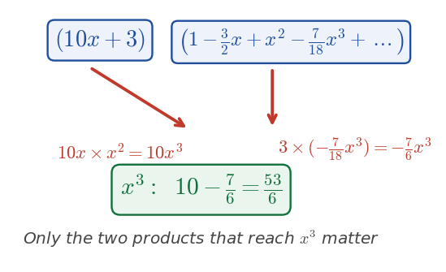

Harry → Phuc • 10 July 2026 tutorial
P2 WMA12/01 — May 2024 — Q1Q1 · Binomial expansion and coefficient of \(x^{3}\)

The two products that yield \(x^{3}\): \(10x\times x^{2}\) and \(3\times\big(-\tfrac{7}{18}x^{3}\big)\).
Part (a) · First four terms of \((1-\frac{x}{6})^{9}\)[3] · worked in lesson
Hide workingStrategy
Use the binomial expansion \((1+u)^{n}=1+nu+\frac{n(n-1)}{2!}u^{2}+\frac{n(n-1)(n-2)}{3!}u^{3}+\cdots\) with \(n=9\) and \(u=-\tfrac{x}{6}\).
Formula · substitute
\[\left(1-\frac{x}{6}\right)^{9}=1+9\!\left(-\frac{x}{6}\right)+\frac{9\cdot8}{2}\!\left(-\frac{x}{6}\right)^{2}+\frac{9\cdot8\cdot7}{6}\!\left(-\frac{x}{6}\right)^{3}+\cdots \]
Working · simplify each term
Term 2: \(9\times(-\tfrac{x}{6})=-\tfrac{3}{2}x\). Term 3: \(36\times\tfrac{x^{2}}{36}=x^{2}\). Term 4: \(84\times\big(-\tfrac{x^{3}}{216}\big)=-\tfrac{7}{18}x^{3}\).
Result
\( 1-\frac{3}{2}x+x^{2}-\frac{7}{18}x^{3}+\cdots \)
Sense check
The coefficients come from Pascal's triangle row 9: \(1,9,36,84\); the signs alternate because \(u=-\tfrac{x}{6}\). Writing \(+1x^{2}\) is unnecessary — just \(x^{2}\) (the MS accepts \(1x^{2}\)).
Phuc's note (recorded): The expansion calculation was correct. Harry advised not writing "+1" before the \(x^{2}\) term — just write \(x^{2}\). A Gemini reconstruction also mentions a written \(\tfrac38x^{2}\) for the third term, but this is internally inconsistent with the correct calculation; treat the reliable takeaway as the presentation note only.
Part (b) · Coefficient of \(x^{3}\)[2] · worked in lesson (lost 1 mark)
Carry-inFrom (a): \((1-\tfrac{x}{6})^{9}=1-\tfrac{3}{2}x+x^{2}-\tfrac{7}{18}x^{3}+\cdots\). Multiply by \((10x+3)\); only products giving \(x^{3}\) matter.
Hide workingStrategy
For "coefficient of \(x^{3}\)" identify every pair of terms from \((10x+3)\) and the expansion whose product is \(x^{3}\). You need not write the whole expansion.
Working · the two products
\[\underbrace{10x\cdot x^{2}}_{10x^{3}}\quad+\quad\underbrace{3\cdot\left(-\frac{7}{18}x^{3}\right)}_{-\frac{7}{6}x^{3}} \]
Working · combine
\[ 10-\frac{7}{6}=\frac{60}{6}-\frac{7}{6}=\frac{53}{6} \]
Result
\( \text{coefficient of }x^{3}=\frac{53}{6} \)
Sense check
\(\tfrac{53}{6}\approx8.83\); the two contributions \(10\) and \(-1.17\) are both needed. Missing either gives a wrong answer.
Phuc's slip (recorded) — the mark-loser: Phuc took only the \(3\times(x^{3}\text{ term})\) product and missed \(10x\times(x^{2}\text{ term})\). Harry: "you were just missing that term, so you lost the final mark." For "coefficient of" questions, include every combination that lands on the required power.
Exam tip (Harry): You need not write the entire expansion — just the terms that contribute to the required power. But do not miss any contributing pair.